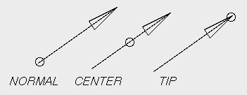

| vfr - Volflex rendering API - |
class vfrVectors
Class Hierarchy
Header files
- #include "vfrVectors.h"
Definitions
- vfrVectors(const std::string& name VFR_NONAME, const Bool mode = FALSE)
- 空のvfrVectorsオブジェクト(頂点0個)をインスタンスする。
- name オブジェクト名
- mode 自己破壊モード
- virtual ~vfrVectors()
- vfrVectorsオブジェクトを破壊する。
public methods / variables
- Bool getHeadMode() const
- アローヘッド表示モードを取得する
- void setHeadMode(const Bool h)
- アローヘッド表示モードを設定する
- h アローヘッド表示モード(デフォルト: TRUE)
- float getHeadScale() const
- アローヘッドの長さを取得する
- void setHeadScale(const float hs)
- アローヘッドの長さを、全体の長さに対する割合で指定する(デフォルト: 0.2)
- hs アローヘッドの長さ(0.0〜1.0)
- float getHeadWidth() const
- アローヘッドの幅を取得する
- void setHeadWidth(const float hw)
- アローヘッドの幅を、全体の長さに対する割合で指定する(デフォルト: 0.05)
- hw アローヘッドの幅(0.0〜1.0)
- void setScaleFac(const float sf)
- 矢印の長さの、実際の長さに対するスケーリングファクター指定する(デフォルト: 1.0)
- sf スケーリングファクター
- float getScaleFac() const
- 矢印の長さのスケーリングファクターを取得する
- VecPosType getPosType() const
- 矢印の表示位置タイプを取得する
- void setPosType(const VecPosType pt)
- 矢印の表示位置タイプを指定する(デフォルト: NORMAL)
- pt 表示位置タイプ
- RenderType getRenderMode() const
- レンダリングモードを返す
Description
vfrVectorsクラスは、ベクトル集合を描画するオブジェクトクラスである。
与えられた頂点位置に
法線ベクトルとして与えられたベクトルデータを
矢印として描画する。
矢印の大きさは、法線ベクトルの長さにスケーリングファクターを
掛けたものになる。
vfrVectorsオブジェクトは、アローヘッド表示モードがTRUEの場合、
全ての矢印にアローヘッド(矢印の頭のキャップ)を表示する。
アローヘッド表示モードは、setHeadMode()で設定する。
アローヘッドの大きさは、全体の長さに対する割合で指定する。
頂点数とベクトルデータ(法線ベクトル)数が異なる場合、余分のデータは無視される。
Position Type
vfrVectorsオブジェクトは、表示位置タイプに応じ、
頂点位置に対して以下のような位置に矢印を表示する。

RenderMode
vfrVectorsオブジェクトは、レンダリングモードがNONEかRT_POINT
の場合を除き、getRenderMode()で返される
レンダリングモードにRT_WIREを加える。
Feedback
フィードバックテストにおいて、vfrVectorsオブジェクトは
フィードバックモード属性に応じ、
以下のような結果を返す。
- FB_VERTEX
- 登録されている頂点順に0から付番された番号でフィードバックテストの結果を返す。
頂点数が奇数個の場合の最後の頂点も、フィードバックテストの対象となる。
- FB_EDGE
- 描画される順序で線分に0から付番された番号でフィードバックテストの結果を返す。
- FB_FACE
- フィードバックテストは常に合格数 0 を返す。